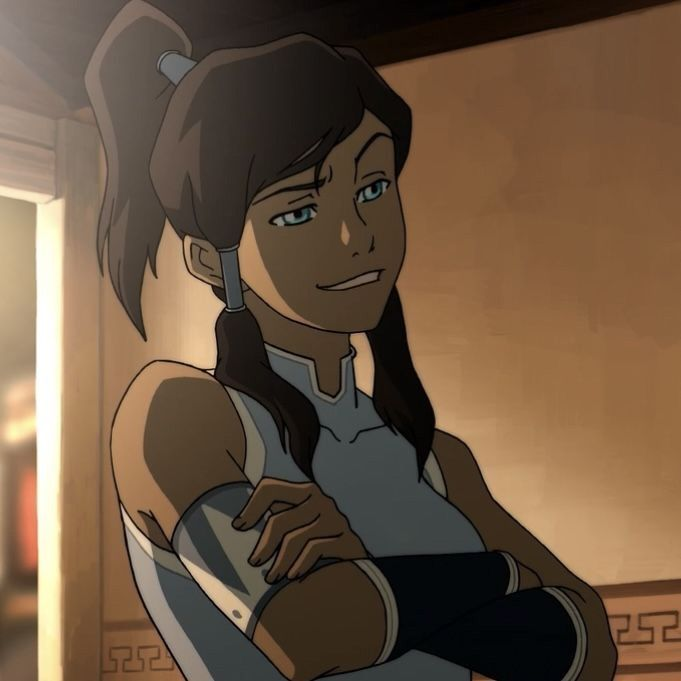
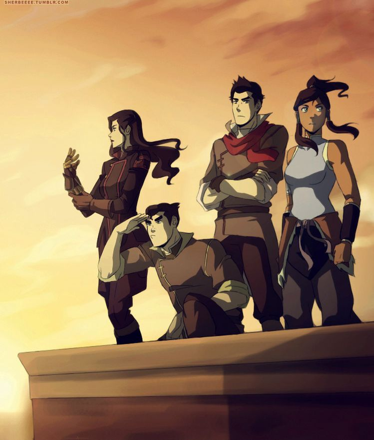
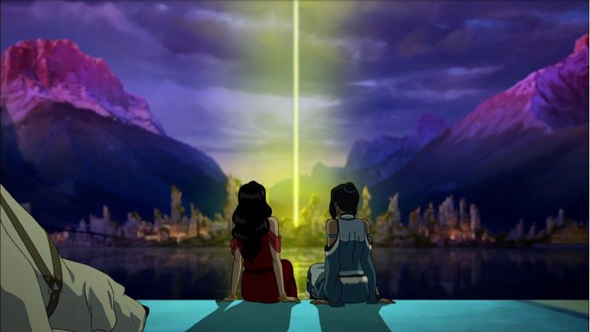

A história de
Korra
Uma jovem Avatar determinada a proteger o mundo e enfrentar os desafios de uma nova era.
Conheça Korra ↓
Conheça a Korra
Korra é a Avatar que sucedeu Aang e nasceu na Tribo da Água do Sul. Desde muito jovem, demonstrou grande habilidade para dominar os elementos.
Diferente de Aang, Korra cresceu sabendo que era o Avatar e passou boa parte de sua juventude treinando para dominar água, terra, fogo e ar.
Determinada, corajosa e muitas vezes impulsiva, Korra precisou aprender que ser o Avatar não significa apenas dominar os elementos, mas também compreender as pessoas e encontrar equilíbrio dentro de si mesma.


A Equipe da Korra
Durante sua jornada, Korra encontrou pessoas que se tornaram fundamentais para sua vida e para suas batalhas. Juntos, eles enfrentaram diversos perigos e ajudaram a proteger o equilíbrio do mundo.
Mako
Um habilidoso dobrador de fogo que se tornou um importante aliado de Korra.
Bolin
Um dobrador de terra divertido e leal, sempre disposto a ajudar seus amigos.
Asami
Uma grande amiga de Korra que utiliza sua inteligência e habilidades para ajudar a equipe.
Os desafios de Korra
A jornada de Korra foi marcada por grandes desafios. Ela enfrentou adversários poderosos e ameaças que colocaram em risco o equilíbrio do mundo.
Além das batalhas, Korra precisou lidar com dúvidas, perdas e momentos que fizeram com que ela questionasse suas próprias capacidades como Avatar.
Cada experiência ajudou Korra a amadurecer e compreender que sua maior força não estava apenas na dominação dos elementos, mas também em sua capacidade de aprender e continuar seguindo em frente.

O legado de Korra
Korra viveu em um mundo muito diferente daquele que Aang conheceu. Durante sua época, as cidades cresceram, novas tecnologias surgiram e a sociedade passou por grandes transformações.
Como Avatar, Korra precisou encontrar uma maneira de manter o equilíbrio em um mundo que estava mudando rapidamente.
Sua jornada mostrou que o papel do Avatar também pode mudar com o passar do tempo, e que cada Avatar precisa encontrar seu próprio caminho.
Uma história de força e evolução
A história de Korra é uma jornada de crescimento, coragem, amizade e descoberta.
Ela começou sua trajetória como uma jovem confiante em suas habilidades, mas precisou enfrentar situações que a fizeram amadurecer e enxergar o mundo de uma maneira diferente.
Ao longo de sua jornada, Korra aprendeu que ser o Avatar não significa apenas possuir poder. Significa também saber ouvir, aprender com os erros e buscar equilíbrio mesmo quando o mundo está mudando.
"O verdadeiro equilíbrio começa dentro de nós."
ASSISTA AO ANIME →